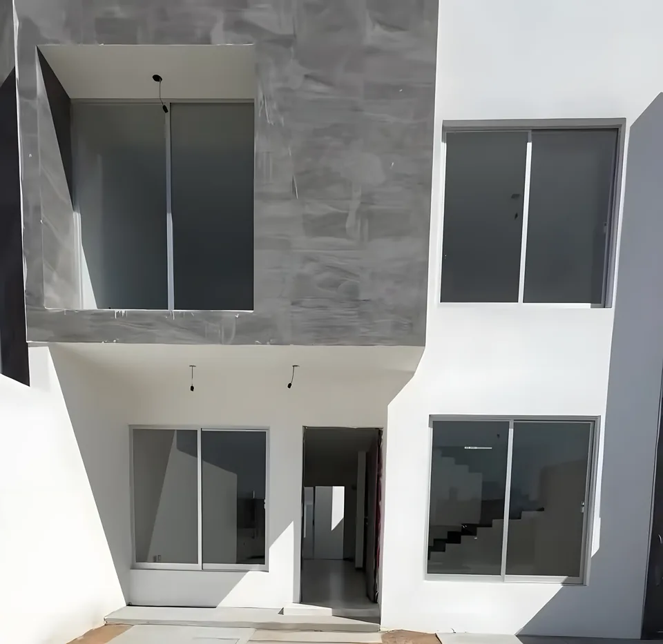

La casa de nuestro video más visto: 276 mil vistas. Casa de dos plantas terminadaUna planta
Granada
- Construcción
- 88.91 m²
- Terreno
- 129.50 m²
Plano y render en nuestro Facebook.
Dos plantas
Casa de dos plantas
- Construcción
- 130.36 m²
- Terreno
- 141.75 m²
Terreno de 7 x 20.25 m. Plano en nuestro Facebook.
Pregunta el precio